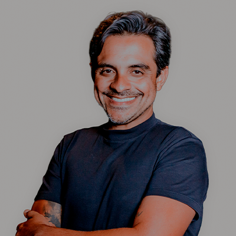

Teologia Ministerial · Power Academy
Reconhecida pelo MEC como extensão universitária.
Para todo cristão que quer estudar com profundidade, mas nunca conseguiu tempo.
Você se reconhece aqui?
O que é o Teologia Ministerial
Não é um curso pesado nem cheio de termos difíceis. É uma formação leve, acessível e progressiva, desenvolvida para todo cristão que quer entender o que crê, com ritmo adaptável e conteúdo que transforma a forma como você pensa, ensina e decide.
Duração
24 meses · Híbrido · estude do jeito que quiser
Reconhecimento
Extensão universitária MEC
Certificado intermediário
Em 12 meses você já recebe seu primeiro certificado
Investimento
R$197 por mês · membro Power tem desconto
Disciplinas
20 no total · 3 grandes áreas
Para quem é
Para todo cristão que quer aprofundar no conhecimento sobre Deus
Depois do curso
Não prometemos transformação vaga. Prometemos capacidade prática: o que você vai conseguir fazer depois que não conseguia antes.
Corpo docente
Cada professor foi escolhido porque une excelência acadêmica com experiência ministerial concreta. Não é teoria distante, é conhecimento que já funcionou na prática.
Bp. Carlos Damasceno
Advogado · MBA Gestão Estratégica de Negócios · Babson College, EUA
Advogado, MBA Gestão Estratégica de Negócios, Especialista em Empreendedorismo (Babson College/USA), Teólogo Ministerial e Pós Graduado em Teologia Sistemática e bíblica (Mackenzie).
Bispa Dany Damasceno
Pedagoga · MBA Gestão Estratégica de Negócios · IBMEC
Pedagoga, MBA Gestão Estratégica de Negócios (IBMEC), Especialista em Psicopedagogia, Docência do Ensino Superior e Neuropsicologia, Pós Graduada em Teologia Sistemática e bíblica (Mackenzie).
Pr. Chris Leão
Bacharel em Direito · MBA em Inovação e Liderança · PUC-RS
Bacharel em Direito (Dom Helder Câmara), Teólogo Ministerial, MBA em Inovação e Liderança (PUC/RS), Pós Graduando em Teologia bíblica e sistemática (Mackenzie).
Karla Damasceno
Especialista em Hebraico e História de Israel
Professora com mais de 18 anos de experiência. Especialista em Hebraico e em História de Israel. Esteve mais de 120 vezes em Israel.

Luis Felipe
Engenheiro · Mestrando em Teologia pela FABAPAR
Graduado em Engenharia (FAP), MBA em Engenharia da Qualidade, Pós Graduado em Teologia Sistemática (Mackenzie). Mestrando em Teologia pela FABAPAR.
Grade curricular
Com disciplinas em Teologia Sistemática, Teologia Bíblica e Teologia Aplicada, o curso é híbrido na plataforma Power Academy, com cada disciplina composta por 4 aulas online e uma aula presencial, com carga horária prevista total de 200 horas por nível.
Teologia Bíblica
Teologia Sistemática
Teologia Aplicada
* A grade poderá ser alterada, havendo comunicação prévia.
Suas dúvidas têm resposta
"Não tenho tempo para estudar teologia."
O formato foi pensado exatamente para você. Aulas assíncronas, ritmo adaptável, conteúdo modular. Você estuda na janela que tem — não numa grade que ignora que você tem uma família, uma célula e um ministério para liderar. 24 meses é tempo suficiente sem que você precise parar de viver para estudar.
"Teologia parece difícil demais para mim."
Esse curso não foi feito para teólogos. Foi feito para quem nunca estudou formalmente — mas quer entender o que crê com profundidade real. A linguagem é acessível. Os professores foram escolhidos por saber explicar bem, não apenas por saber muito. Na primeira semana, você já vai entender algo que nunca entendeu antes sobre a Bíblia.
Matrícula aberta · Turma limitada
Teologia Ministerial
R$197
por mês · 24 meses de formação
Vagas limitadas por turma.
Perguntas frequentes
O curso tem data e horário fixo de aulas?
Não. Todas as aulas são gravadas e disponibilizadas na plataforma. Você assiste quando e onde quiser — a única exigência é o compromisso com a sua formação.
Preciso ter ensino superior para me matricular?
Não é exigido. O Teologia Ministerial é um curso de extensão universitária reconhecido pelo MEC, aberto a qualquer pessoa com disposição para estudar com seriedade.
E se eu não conseguir acompanhar o ritmo?
O curso foi desenhado em módulos progressivos, sem sobrecarga. Se precisar pausar, o conteúdo continua disponível. A meta é que você conclua — não que você sofra pelo caminho.
O certificado tem validade? Serve para algo além da Power Church?
Sim. O certificado de extensão universitária com reconhecimento MEC tem validade nacional. Serve como formação complementar em currículos, processos ministeriais e contextos institucionais.
O que acontece quando as vagas esgotarem?
A próxima turma só abre quando houver disponibilidade. Quem está na lista de espera tem prioridade e condições especiais de matrícula.